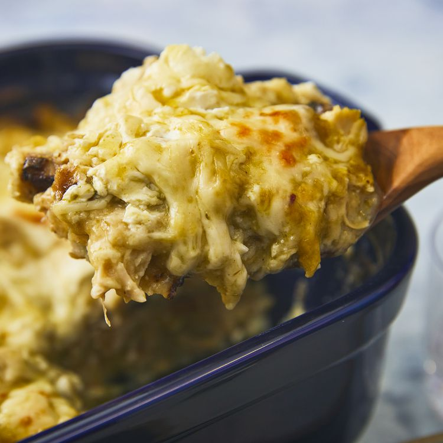

Green Chile Enchiladas

This chicken enchilada casserole recipe is so good that my four picky kids eat it!
and I got my picture in the paper for it!
If you want to skip the charring step,
simply tear the tortillas into quarters so they absorb the sauce better.
- 4 skinless, boneless chicken breast halves
- garlic salt to tase
- 18 corn tortillas, torn in half
- 1 can green chile enchilada saue
- 1 package shredded Monterey Jack cheese
- 1 container reduced fat sour cream
- Preheast oven to 350 degrees
- Season chicken with garlic salt and then bake in oven until no longer pink and the juices run clear.
- Meanwhile, char each tortilla half over the open flame of a gas stove burner using metal tongs until lightly puffed, about 1 minute.
- Pour about 1/2 inch enchilada sauce into the bottom of a medium baking dish; arrange 6 tortillas in a single layer on top. Sprinkle with 1/2 of the chicken, 1/3 of the cheese, 1/2 of the sour cream, and 1/3 of the remaining enchilada sauce. Repeat layers. Coat remaining tortillas thoroughly with some of the remaining enchilada sauce and arrange on top. Sprinkle with remaining cheese and top with any remaining enchilada sauce
- Cover and bake in the preheated oven for 45 minutes. Cool slightly before serving.